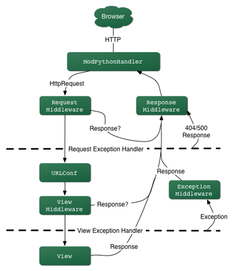

Функции

Прослойка между веб-сервером и веб-приложением
process_requestprocess_viewprocess_exceptionprocess_responseprocess_requestUrlConffrom django.urls import path
from . import views
urlpatterns = [
path('articles/2003/', views.special_case_2003),
path('articles/<int:year>/', views.year_archive),
path('articles/<int:year>/<int:month>/', views.month_archive),
path('articles/<int:year>/<int:month>/<slug:slug>/',
views.article_detail),
]
process_viewprocess_view(request, view_function, view_args, view_kwargs)None - вызов следующейHttpResponse завершаютсяfrom django.http import HttpResponse
import datetime
def current_datetime(request):
now = datetime.datetime.now()
html = "<html><body>It is now %s.</body></html>" % now
return HttpResponse(html)
import django.http
from django.template.response import TemplateResponse
def blog_index(request):
return TemplateResponse(request, 'entry_list.html', {
'entries': Entry.objects.all()
})
>>> from django.template.response import TemplateResponse
>>> t = TemplateResponse(request, 'original.html', {})
>>> t.render()
>>> print(t.content)
Original content
>>> t.template_name = 'new.html'
>>> t.render()
>>> print(t.content)
Original content
django.shortcutfrom django.shortcuts import render
def my_view(request):
# View code here...
return render(request, 'myapp/index.html', {
'foo': 'bar',
}, content_type='application/xhtml+xml')
from django.http import HttpResponse
from django.template import loader
def my_view(request):
# Что-то сделали...
t = loader.get_template('myapp/index.html')
c = {'foo': 'bar'}
return HttpResponse(t.render(c, request),
content_type='application/xhtml+xml')